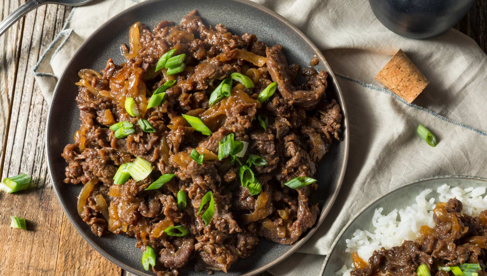

.png)
Comida
Kimchi
El Kimchi es uno de los platillos más emblemáticos de la cocina coreana. Se trata de vegetales fermentados, especialmente col china, aderezados con ajo, jengibre, pasta de chile y sal. Este platillo es un acompañante esencial en casi todas las comidas coreanas, y tiene un sabor picante y ácido que refleja la rica tradición fermentada del país.

Bibimbap
El Bibimbap es un delicioso plato que consiste en arroz cubierto con una variedad de vegetales, carne (usualmente carne de res), un huevo frito y pasta de chile gochujang. Se mezcla todo junto antes de comerlo, y es famoso por su combinación equilibrada de sabores y su presentación colorida, simbolizando la armonía y el equilibrio en la cocina coreana.

Bulgogi
El Bulgogi es un plato popular de carne marinada, generalmente de res, que se cocina a la parrilla o a la sartén. La marinada tiene una mezcla de salsa de soja, azúcar, aceite de sésamo, ajo y cebollas, lo que le da un sabor dulce y salado con un toque umami. Se sirve a menudo con arroz y vegetales, y es conocido por su sabor jugoso y tierno.
